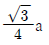
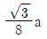
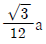
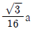
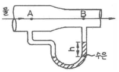
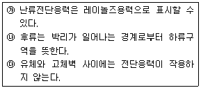
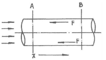
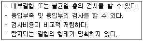
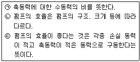

가스기사 (2017-08-26 기출문제)
1과목: 가스유체역학
1. 표준기압, 25℃인 공기 속에서 어떤 물체가 910m/s의 속도로 움직인다. 이때 음속과 물체의 마하수는 각각 얼마인가? (단, 공기의 비열비는 1.4, 기체상수는 287J/㎏·K이다.)
- 326m/s, 2.79
- 346m/s, 2.63
- 359m/s, 2.53
- 367m/s, 2.48
(정답률: 79%)

2. 한 변의 길이가 a인 정삼각형 모양의 단면을 갖는 파이프 내로 유체가 흐른다. 이 파이프의 수력반경(hydraulic radius)은?




(정답률: 79%)
3. 그림에서 수은주의 높이 차이 h가 80㎝를 가리킬 때 B지점의 압력이 1.25㎏f/cm2이라면 A지점의 압력은 약 몇 ㎏f/cm2인가? (단, 수은의 비중은 13.6이다.)

- 1.08
- 1.19
- 2.26
- 3.19
(정답률: 54%)
4. 다음 중 정상유동과 관계있는 식은? (단, V＝속도벡터, s＝임의방향좌표, t＝시간이다.)(문제 오류로 보기 내용이 정확하지 않습니다. 정확한 내용을 아시는 분 께서는 오류 신고를 통하여 내용 작성 부탁 드립니다. 정답은 1번입니다.)
- ∂V/∂t=0
- ∂V/∂s≠0
- ∂V/∂t≠0
- ∂V/∂s=0
(정답률: 79%)
5. 베르누이의 방정식에 쓰이지 않는 head(수두)는?
- 압력수두
- 밀도수두
- 위치수두
- 속도수두
(정답률: 80%)
6. 측정기기에 대한 설명으로 옳지 않은 것은?
- Piezometer : 탱크나 관 속의 작은 유압을 측정하는 액주계
- Micromanometer : 작은 압력차를 측정 할 수 있는 압력계
- Mercury Barometer : 물을 이용하여 대기 절대압력을 측정하는 장치
- Inclined-tube manometer : 액주를 경사시켜 계측의 감도를 높인 압력계
(정답률: 87%)
7. 5.165 mH2O는 다음 중 어느 것과 같은가?
- 760 ㎜Hg
- 0.5 atm
- 0.7 bar
- 1013 ㎜Hg
(정답률: 78%)
8. Hagen - Poiseuille 식은 -(dP/dx)＝(32μVavg)/D2로 표현한다. 이 식을 유체에 적용시키기 위한 가정이 아닌 것은?
- 뉴턴유체
- 압축성
- 층류
- 정상상태
(정답률: 69%)
9. 평판을 지나는 경계층 유동에 관한 설명으로 옳은 것은? (단, x는 평판 앞쪽 끝으로부터의 거리를 나타낸다.)
- 평판 유동에서 층류 경계층의 두께는 x1/2에 비례한다.
- 경계층에서 두께는 물체의 표면부터 측정한 속도가 경계층의 외부 속도의 80%가 되는 점까지의 거리이다.
- 평판에 형성되는 난류 경계층의 두께는 x에 비례한다.
- 평판 위의 층류 경계층의 두께는 거리의 제곱에 비례한다.
(정답률: 60%)
10. 다음 중 차원 표시가 틀린 것은? (단, M : 질량, L : 길이, T: 시간, F : 힘이다.)
- 절대점성계수 : μ＝[FL-1T]
- 동점성계수 : ν＝[L2T-1]
- 압력 : P＝[FL-2]
- 힘 : F＝[MLT-2]
(정답률: 64%)
11. 표면이 매끈한 원관인 경우 일반적으로 레이놀즈수가 어떤 값일 때 층류가 되는가?
- 4000 보다 클 때
- 40002일 때
- 2100 보다 작을 때
- 21002일 때
(정답률: 86%)
12. 다음 중 의소성 유체(pseudo plastics)에 속하는 것은?
- 고분자 용액
- 점토 현탁액
- 치약
- 공업용수
(정답률: 74%)
13. 압력 100kPa abs, 온도 20℃의 공기 5㎏이 등엔트로피가 변화하여 온도 160℃로 되었다면 최종압력은 몇 kPa abs인가? (단, 공기의 비열비 k＝1.4이다.)
- 392
- 265
- 112
- 462
(정답률: 51%)
14. 축류펌프의 특정에 대해 잘못 설명한 것은?
- 가동익(가동날개)의 설치각도를 크게 하면 유량을 감소시킬 수 있다.
- 비속도가 높은 영역에서는 원심펌프보다 효율이 높다.
- 깃의 수를 많이 하면 양정이 증가한다.
- 체절상태로 운전은 불가능하다.
(정답률: 61%)
15. 다음의 압축성 유체의 흐름 과정 중 등엔트로피 과정인 것은?
- 가역단열 과정
- 가역등온 과정
- 마찰이 있는 단열 과정
- 마찰이 없는 비가역 과정
(정답률: 86%)
16. 유체의 흐름에 대한 설명으로 다음 중 옳은 것을 모두 나타내면?

- ㉮
- ㉮, ㉰
- ㉮, ㉯
- ㉮, ㉯, ㉰
(정답률: 59%)
17. 부력에 대한 설명 중 틀린 것은?
- 부력은 유체에 잠겨있을 때 물체에 대하여 수직 위로 작용한다.
- 부력의 중심을 부심이라 하고 유체의 잠긴 체적의 중심이다.
- 부력의 크기는 물체가 유체 속에 잠긴 체적에 해당하는 유체의 무게와 같다.
- 물체가 액체 위에 떠 있을 때는 부력이 수직 아래로 작용한다.
(정답률: 83%)
18. 구가 유체 속을 자유낙하할 때 받는 항력 F가 점성계수 μ, 지름 D, 속도 V의 함수로 주어진다. 이 물리량들 사이의 관계식을 무차원으로 나타내고자 할 때 차원해석에 의하면 몇개의 무차원수로 나타낼 수 있는가?
- 1
- 2
- 3
- 4
(정답률: 62%)
19. 내경 0.1m인 수평 원관으로 물이 흐르고 있다. A단면에 미치는 압력이 100Pa, B단면에 미치는 압력이 50Pa라고 하면 A, B 두 단면 사이의 관벽에 미치는 마찰력은 몇 N인가?

- 0.393
- 1.57
- 3.93
- 15.7
(정답률: 42%)
20. 터보팬의 전압이 250㎜Aq, 축 동력이 0.5PS, 전압효율이 45%라면 유량은 약 몇 m3/min인가?
- 7.1
- 6.1
- 5.1
- 4.1
(정답률: 46%)
2과목: 연소공학
21. 연소온도를 높이는 방법으로 가장 거리가 먼 것은?
- 연료 또는 공기를 예열한다.
- 발열량이 높은 연료를 사용한다.
- 연소용 공기의 산소농도를 높인다.
- 복사전열을 줄이기 위해 연소속도를 늦춘다.
(정답률: 87%)
22. 액체연료를 미세한 기름방울로 잘게 부수어 단위 질량당의 표면적을 증가시키고 기름방울을 분산, 주위 공기와의 혼합을 적당히 하는 것을 미립화라고 한다. 다음 중 원판, 컵 등의 외주에서 원심력에 의해 액체를 분산시키는 방법에 의해 미립화 하는 분무기는?
- 회전체 분무기
- 충돌식 분무기
- 초음파 분무기
- 정전식 분무기
(정답률: 89%)
23. 공기비에 관한 설명으로 틀린 것은?
- 이론공기량에 대한 실제공기량의 비이다.
- 무연탄보다 중유 연소 시 이론공기량이 더 적다.
- 부하율이 변동될 때의 공기비를 턴다운(turn down) 비라고 한다.
- 공기비를 낮추면 불완전 연소 성분이 증가한다.
(정답률: 65%)
24. 메탄가스 1m3를 완전 연소시키는 데 필요한 공기량은 몇 m3인가? (단, 공기 중 산소는 20% 함유되어 있다.)
- 5
- 10
- 15
- 20
(정답률: 65%)
25. 수증기 1mol이 100℃, 1atm에서 물로 가역적으로 응축될 때 엔트로피의 변화는 약 몇 cal/mol·K인가? (단, 물의 증발열은 539cal/g, 수증기는 이상기체라고 가정한다.)
- 26
- 540
- 1700
- 2200
(정답률: 42%)
26. 메탄의 탄화수소 (C/H) 비는 얼마인가?
- 0.25
- 1
- 3
- 4
(정답률: 75%)
27. 프로판가스의 연소과정에서 발생한 열량이 13000kcal/㎏, 연소할 때 발생된 수증기의 잠열이 2000kcal/㎏ 일 경우, 프로판 가스의 연소효율은 얼마인가? (단, 프로판가스의 진발열량은 11000kcal/㎏이다.)
- 50%
- 100%
- 150%
- 200%
(정답률: 71%)
28. 프로판가스 1Sm3을 완전연소시켰을 때의 건조연소가스량은 약 몇 Sm3인가? (단, 공기 중의 산소는 21v%이다.)
- 10
- 16
- 22
- 30
(정답률: 63%)
29. 1kWh의 열당량은?
- 376kcal
- 427kcal
- 632kcal
- 860kcal
(정답률: 82%)
30. 내압(耐壓) 방폭구조로 방폭전기기기를 설계할 때 가장 중요하게 고려 할 사항은?
- 가연성 가스의 연소열
- 가연성 가스의 안전간극
- 가연성 가스의 발화점(발화도)
- 가연성 가스의 최소점화에너지
(정답률: 85%)
31. 폭발형태 중 가스 용기나 저장탱크가 직화에 노출되어 가열되고 용기 또는 저장탱크의 강도를 상실한 부분을 통한 급격한 파단에 의해 내부비등액체가 일시에 유출되어 화구(fireball) 현상을 동반하며 폭발하는 현상은?
- BLEVE
- VCE
- Jet fire
- Flash over
(정답률: 83%)
32. 착화온도에 대한 설명 중 틀린 것은?
- 압력이 높을수록 낮아진다.
- 발열량이 클수록 낮아진다.
- 반응활성도가 클수록 높아진다.
- 산소량이 증가할수록 낮아진다.
(정답률: 68%)
33. 분자량이 30인 어떤 가스의 정압비열이 0.516kJ/㎏·K이라고 가정 할 때 이 가스의 비열비 k는 약 얼마인가?
- 1.0
- 1.4
- 1.8
- 2.2
(정답률: 51%)
34. 다음과 같은 조성을 갖는 혼합가스의 분자량은? (단, 혼합가스의 체적비는 CO2(13.1%), O2(7.7%), N2(79.2%)이다.)
- 22.81
- 24.94
- 28.67
- 30.40
(정답률: 67%)
35. 공기흐름이 난류일 때 가스연료의 연소현상에 대한 설명으로 옳은 것은?
- 화염이 뚜렷하게 나타난다.
- 연소가 양호하여 화염이 짧아진다.
- 불완전연소에 의해 열효율이 감소한다.
- 화염이 길어지면서 완전연소가 일어난다.
(정답률: 53%)
36. 고발열량에 대한 설명 중 틀린 것은?
- 총발열량이다.
- 진발열량이라고도 한다.
- 연료가 연소될 때 연소가스 중에 수증기의 응축잠열을 포함한 열량이다.
- Hh＝HL＋Hs＝HL＋600(9H＋W)로 나타낼 수 있다.
(정답률: 74%)
37. 옥탄(g)의 연소 엔탈피는 반응물 중의 수증기가 응축되어 물이 되었을 때 25℃에서 -48220kJ/㎏이다. 이 상태에서 옥탄(g)의 저위발열량은 약 몇 kJ/㎏인가? (단, 25℃ 물의 증발엔탈피[hfg]는 2441.8kJ/㎏이다.)
- 40750
- 42320
- 44750
- 45778
(정답률: 42%)
38. 밀폐된 용기 또는 설비 안에 밀봉된 가스가 그 용기 또는 설비의 사고로 인하여 파손되거나 오조작의 경우에만 누출될 위험이 있는 장소는 위험장소의 등급 중 어디에 해당하는가?
- 0종
- 1종
- 2종
- 3종
(정답률: 77%)
39. 연소의 3요소가 아닌 것은?
- 가연성 물질
- 산소공급원
- 발화점
- 점화원
(정답률: 86%)
40. 폭굉유도거리에 대한 설명 중 옳은 것은?
- 압력 이 높을수록 짧아진다.
- 관속에 방해물이 있으면 길어진다.
- 층류연소속도가 작을수록 짧아진다.
- 점화원의 에너지가 강할수록 길어진다.
(정답률: 65%)
3과목: 가스설비
41. 아세틸렌은 금속과 접촉 반응하여 폭발성 물질을 생성한다. 다음 금속 중 이에 해당하지 않는 것은?
- 금
- 은
- 동
- 수은
(정답률: 75%)
42. 다음 보기의 비파괴 검사방법은?

- 방사선투과 검사
- 침투탐상 검사
- 초음파탐상 검사
- 자분탐상 검사
(정답률: 62%)
43. 왕복형 압축기의 특징에 대한 설명으로 옳은 것은?
- 압축효율이 낮다.
- 쉽게 고압이 얻어진다.
- 기초 설치 면적이 작다.
- 접촉부가 적어 보수가 쉽다.
(정답률: 69%)
44. 어떤 냉동기에서 0℃의 물로 0℃의 얼음 3톤을 만드는데 100kW/h의 일이 소요되었다면 이 냉동기의 성능계수는? (단, 물의 응고열은 80kcal/㎏이다.)
- 1.72
- 2.79
- 3.72
- 4.73
(정답률: 53%)
45. 가스 연소기에서 발생할 수 있는 역화(Flash back)현상의 발생원인으로 가장 거리가 먼 것은?
- 분출속도가 연소속도보다 빠른 경우
- 노즐, 기구밸브 등이 막혀 가스량이 극히 적게 된 경우
- 연소속도가 일정하고 분출속도가 느린 경우
- 버너가 오래되어 부식에 의해 염공이 크게 된 경우
(정답률: 63%)
46. 수소가스 집합장치의 설계 매니폴드 지관에서 감압밸브는 상용압력이 14MPa인 경우 내압시험 압력은 얼마 이상인가?
- 14MPa
- 21MPa
- 25MPa
- 28MPa
(정답률: 72%)
47. 콕 및 호스에 대한 설명으로 옳은 것은?
- 고압고무호스 중 투윈호스는 차압 100kPa이하에서 정상적으로 작동하는 체크밸브를 부착하여 제작한다.
- 용기밸브 및 조정기에 연결하는 이음쇠의 나사는 오른나사로서 W22.5 x 14T, 나사부의 길이는 20㎜ 이상으로 한다.
- 상자콕은 과류차단안전기구가 부착된 것으로서 배관과 카플러를 연결하는 구조이고, 주물황동을 사용할 수 있다.
- 콕은 70kPa이상의 공기압을 10분간 가했을 때 누출이 없는 것으로 한다.
(정답률: 65%)
48. 용기용 밸브는 가스 충전구의 형식에 따라 A형, B형, C형의 3종류가 있다. 가스 충전구가 암나사로 되어있는 것은?
- A 형
- B 형
- A, B 형
- C 형
(정답률: 85%)
49. 압력 2MPa 이하의 고압가스 배관설비로서 곡관을 사용하기가 곤란한 경우 가장 적정한 신축이음매는?
- 벨로우즈형 신축이음매
- 루프형 신축이음매
- 슬리브형 신축이음매
- 스위블형 신축이음매
(정답률: 68%)
50. 액화천연가스(메탄기준)를 도시가스 원료로 사용할 때 액화천연가스의 특징을 옳게 설명한 것은?
- 천연가스의 C/H 질량비가 3이고 기화설비가 필요하다.
- 천연가스의 C/H 질량비가 4이고 기화설비가 필요 없다.
- 천연가스의 C/H 질량비가 3이고 가스제조 및 정제설비가 필요하다.
- 천연가스의 C/H 질량비가 4이고 개질설비가 필요하다.
(정답률: 77%)
51. 가연성가스의 위험도가 가장 높은 가스는?
- 일산화탄소
- 메탄
- 산화에틸렌
- 수소
(정답률: 68%)
52. 내용적 50L의 LPG 용기에 상온에서 액화프로판 15㎏를 충전하면 이 용기내 안전공간은 약 몇 % 정도인가? (단, LPG의 비중은 0.5이다.)
- 10%
- 20%
- 30%
- 40%
(정답률: 46%)
53. 공기액화분리장치의 폭발 원인이 아닌 것은?
- 액체 공기 중 산소 (02)의 혼입
- 공기 취입구로부터 아세틸렌 혼입
- 공기 중 질소화합물 (NO, N02)의 혼입
- 압축기용 윤활유 분해에 따른 탄화수소의 생성
(정답률: 59%)
54. 발열량 5000kcal/m3, 비중 0.61, 공급표준압력 100㎜H2O인 가스에서 발열량 11000kcal/m3, 비중 0.66, 공급표준압력이 200㎜H2O인 천연가스로 변경할 경우 노즐변경율은 얼마인가?
- 0.49
- 0.58
- 0.71
- 0.82
(정답률: 53%)
55. 가스 누출을 조기에 발견하기 위하여 사용되는 냄새가 나는 물질(부취제)이 아닌 것은?
- T.H.T
- T.B.M
- D.M.S
- T.E.A
(정답률: 83%)
56. 펌프의 효율에 대한 설명으로 옳은 것으로만 짝지어진 것은?

- ㉠
- ㉠, ㉡
- ㉠, ㉢
- ㉠, ㉡, ㉢
(정답률: 75%)
57. 다음 중 압력배관용 탄소강관을 나타내는 것은?
- SPHT
- SPPH
- SPP
- SPPS
(정답률: 65%)
58. 고압가스 제조 장치의 재료에 대한 설명으로 옳지 않은 것은?
- 상온 건조 상태의 염소가스에 대하여는 보통강을 사용할 수 있다.
- 암모니아, 아세틸렌의 배관 재료에는 구리 및 구리합금이 적당하다.
- 고압의 이산화탄소 세정장치 등에는 내산강을 사용하는 것이 좋다.
- 암모니아 합성탑 내통의 재료에는 18-8 스테인리스강을 사용한다.
(정답률: 84%)
59. 도시가스의 발열량이 10400kcal/m3이고 비중이 0.5일 때 웨버지수(WI)는 얼마인가?
- 14142
- 14708
- 18257
- 27386
(정답률: 72%)
60. 안전밸브에 대한 설명으로 틀린 것은?
- 가용전식은 Cl2, C2H2 등에 사용된다.
- 파열판식은 구조가 간단하며, 취급이 용이하다.
- 파열판식은 부식성, 괴상물질을 함유한 유체에 적합하다.
- 피스톤식이 가장 일반적으로 널리 사용된다.
(정답률: 68%)
4과목: 가스안전관리
61. 밀폐된 목욕탕에서 도시가스 순간온수기를 사용하던 중 쓰러져서 의식을 잃었다. 사고 원인으로 추정할 수 있는 것은?
- 가스누출에 의한 중독
- 부취제에 의한 중독
- 산소결핍에 의한 질식
- 질소과잉으로 인한 중독
(정답률: 75%)
62. 실제 사용하는 도시 가스의 열량이 9500kcal/m3이고, 가스사용시설의 법적 사용량은 5200m3일 때 도시가스 사용량은 약몇 m3인가? (단, 도시가스의 월사용예정량을 구할 때의 열량을 기준으로 한다.)
- 4,490
- 6,020
- 7,020
- 8,020
(정답률: 43%)
63. 산화에틸렌의 충전에 대한 설명으로 옳은 것은?
- 산화에틸렌의 저장탱크에는 45℃ 에서 그 내부가스의 압력이 0.3MPa 이상이 되도록 질소가스를 충전한다.
- 산화에틸렌의 저장탱크에는 45℃에서 그 내부가스의 압력이 0.4MPa 이상이 되도록 질소가스를 충전한다.
- 산화에틸렌의 저장탱크에는 60℃ 에서 그 내부가스의 압력이 0.3MPa 이상이 되도록 질소가스를 충전한다.
- 산화에틸렌의 저장탱크에는 60℃ 에서 그 내부가스의 압력이 0.4MPa 이상이 되도록 질소가스를 충전한다.
(정답률: 59%)
64. 공기나 산소가 섞이지 않더라도 분해폭발을 일으킬 수 있는 가스는?
- CO
- CO2
- H2
- C2H2
(정답률: 80%)
65. 고압가스를 운반하기 위하여 동일한 차량에 혼합 적재 가능한 것은?
- 염소 - 아세틸렌
- 염소 - 암모니아
- 염소 - LPG
- 염소 - 수소
(정답률: 64%)
66. 다음 중 독성가스는?
- 수소
- 염소
- 아세틸렌
- 메탄
(정답률: 80%)
67. 고압가스용 차량에 고정된 탱크의 설계기준으로 틀린 것은?
- 탱크의 길이이음 및 원주이음은 맞대기 양면 용접으로 한다.
- 용접하는 부분의 탄소강은 탄소함유량이 1.0% 미만으로 한다.
- 탱크에는 지름 375㎜이상의 원형 맨홀 또는 긴 지름 375㎜ 이상, 짧은 지름 275㎜ 이상의 타원형 맨홀을 1개 이상 설치한다.
- 탱크의 내부에는 차량의 진행방향과 직각이 되도록 방파판을 설치한다.
(정답률: 65%)
68. 도시가스 공급시설 또는 그 시설에 속하는 계기를 장치하는 회로에 설치하는 것으로서 온도 및 압력과 그 시설의 상황에 따라 안전확보를 위한 주요부분에 설비가 잘못 조작되거나 이상이 발생하는 경우에 자동으로 가스의 발생을 차단시키는 장치를 무엇이라 하는가?
- 벤트스텍
- 안전밸브
- 인터록기구
- 가스누출검지통보설비
(정답률: 77%)
69. “액화석유가스충전사업”의 용어 정의에 대하여 가장 바르게 설명한 것은?
- 저장시설에 저장된 액화석유가스를 용기 또는 차량에 고정된 탱크에 충전하여 공급하는 사업
- 액화석유가스를 일반의 수요에 따라 배관을 통하여 연료로 공급하는 사업
- 대량수요자에게 액화한 천연가스를 공급하는 사업
- 수요자에게 연료용 가스를 공급하는 사업
(정답률: 82%)
70. 고압가스특정제조허가의 대상 시설로서 옳은 것은?
- 석유정제업자의 석유정제시설 또는 그 부대시설에서 고압 가스를 제조하는 것으로서 그 저장능력이 10톤 이상인 것
- 석유화학공업자의 석유화학공업시설 또는 그 부대시설에서 고압가스를 제조하는 것으로서 그 저장능력이 10톤 이상인 것
- 석유화학공업자의 석유화학공업시설 또는 그 부대시설에서 고압가스를 제조하는 것으로서 그 처리능력이 1 천세제곱미터 이상인 것
- 철강공업자의 철강공업시설 또는 그 부대시설에서 고압가스를 제조하는 것으로서 그 처리능력이 10만세제곱미터 이상인 것
(정답률: 55%)
71. 액화석유가스 저장소의 저장탱크는 항상 얼마이하의 온도를 유지하여야 하는가?
- 30℃
- 40℃
- 50℃
- 60℃
(정답률: 88%)
72. 유해물질이 인체에 나쁜 영향을 주지 않는다고 판단하고 일정한 기준 이하로 정한 농도를 무엇이라고 하는가?
- 한계농도
- 안전농도
- 위험농도
- 허용농도
(정답률: 73%)
73. 고압가스 저온저장탱크의 내부 압력이 외부 압력보다 낮아져 저장탱크가 파괴되는 것을 방지하기 위해 설치하여야할 설비로 가장 거리가 먼 것은?
- 압력계
- 압력경보설비
- 진공안전밸브
- 역류방지밸브
(정답률: 74%)
74. 고압가스 특정제조시설에서 배관을 지하에 매설할 경우 지하도로 및 터널과 최소 몇 m이상의 수평거리를 유지하여야 하는가?
- l .5m
- 5m
- 8m
- 10m
(정답률: 63%)
75. 구조·재료·용량 및 성능 등에서 구별되는 제품의 단위를 무엇이라고 하는가?
- 공정
- 형식
- 로트
- 셀
(정답률: 62%)
76. 독성가스는 허용농도 얼마 이하인 가스를 뜻하는가? (단, 해당가스를 성숙한 흰 쥐 집단에게 대기 중에서 1 시간 동안 계속하여 노출시킨 경우 14 일 이내에 그 흰 쥐의 1/2 이상이 죽게 되는 가스의 농도를 말한다.)
- 100/1,000,000
- 200/1,000,000
- 500/1,000,000
- 5,000/1,000,000
(정답률: 57%)
77. 액화염소가스를 5톤 운반차량으로 운반하려고 할 때 응급조치에 필요한 제독제 및 수량은?
- 소석회 -20㎏ 이상
- 소석회 -40㎏ 이상
- 가성소다 -20㎏ 이상
- 가성소다 -40㎏ 이상
(정답률: 67%)
78. 내부 용적이 35,000L인 액화산소 저장탱크의 저장능력은 얼마인가?(단, 비중은 1.2)
- 24,780㎏
- 26,460㎏
- 27,520㎏
- 37,800㎏
(정답률: 51%)
79. 2단 감압식 1차용 조정기의 최대폐쇄압력은 얼마인가?
- 3.5kPa 이하
- 50kPa 이하
- 95kPa 이하
- 조정압력의 1. 25 배 이하
(정답률: 71%)
80. 고압가스 일반제조시설에서 몇 m3이상의 가스를 저장하는 것에 가스방출장치를 설치하여야 하는가?
- 5
- 10
- 20
- 50
(정답률: 63%)
5과목: 가스계측기기
81. 흡수법에 의한 가스분석법 중 각 성분과 가스 흡수액을 옳지 않게 짝지은 것은?
- 중탄화수소흡수액 - 발연황산
- 이산화탄소흡수액 - 염화나트륨 수용액
- 산소흡수액 - (수산화칼륨＋피로카롤)수용액
- 일산화탄소흡수액 - (염화암모늄＋염화제1구리)의 분해용액에 암모니아수를 가한 용액
(정답률: 64%)
82. 안지름이 14㎝인 관에 물이 가득 차서 흐를 때 피토관으로 측정한 유속이 7m/sec이었다면 이때의 유량은 약 몇 ㎏/sec인가?
- 39
- 108
- 433
- 1077.2
(정답률: 57%)
83. 피토관(Pitot tube)의 주된 용도는?
- 압력을 측정하는데 사용된다.
- 유속을 측정하는데 사용된다.
- 온도를 측정하는데 사용된다.
- 액체의 점도를 측정하는데 사용된다.
(정답률: 77%)
84. 가스크로마토그래피의 구성이 아닌 것은?
- 캐리어가스
- 검출기
- 분광기
- 컬럼
(정답률: 73%)
85. 염화 제1구리 착염지를 이용하여 어떤 가스의 누출 여부를 검지한 결과 착염지가 적색으로 변하였다. 이때 누출된 가스는?
- 아세틸렌
- 수소
- 염소
- 황화수소
(정답률: 69%)
86. 직접식 액면계에 속하지 않는 것은?
- 직관식
- 차압식
- 플로트식
- 검척식
(정답률: 65%)
87. 가스미터 선정 시 주의사항으로 가장 거리가 먼 것은?
- 내구성
- 내관검사
- 오차의 유무
- 사용 가스의 적정성
(정답률: 72%)
88. 습식가스미터에 대한 설명으로 틀린 것은?
- 추량식이다.
- 설치공간이 크다.
- 정확한 계량이 가능하다.
- 일정 시간 동안의 회전수로 유량을 측정한다.
(정답률: 59%)
89. 오리피스 유량계의 적용 원리는?
- 부력의 법칙
- 토리첼리의 법칙
- 베르누이 법칙
- Gibbs의 법칙
(정답률: 77%)
90. 차압식 유량계로 유량을 측정하였더니 오리피스 전·후의 차압이 1936mmH2O일 때 유량은 22m3/h이었다. 차압이 1024mmH2O이면 유량은 얼마가 되는가?
- 12m3/h
- 14m3/h
- 16m3/h
- 18m3/h
(정답률: 46%)
91. 적외선 가스분석계로 분석하기가 어려운 가스는? (문제 오류로 실제 시험에서는 1, 2번이 정답처리 되었습니다. 여기서는 1번을 누르면 정답 처리 됩니다.)
- Ne
- N2
- CO2
- SO2
(정답률: 77%)
92. 보일러에서 여러 대의 버너를 사용하여 연소실의 부하를 조절하는 경우 버너의 특성 변화에 따라 버너의 대수를 수시로 바꾸는데, 이때 사용하는 제어방식으로 가장 적당한 것은?
- 다변수제어
- 병렬제어
- 캐스케이드제어
- 비율제어
(정답률: 64%)
93. 고압 밀폐탱크의 액면 측정용으로 주로 사용되는 것은?
- 편위식 액면계
- 차압식 액면계
- 부자식 액면계
- 기포식 액면계
(정답률: 61%)
94. 열전도형 검출기(TCD)의 특성에 대한 설명으로 틀린 것은?
- 고농도의 가스를 측정할 수 있다.
- 가열된 서미스터에 가스를 접촉시키는 방식이다.
- 공기와의 열전도도 차가 작을수록 감도가 좋다.
- 가연성 가스 이외의 가스도 측정할 수 있다.
(정답률: 54%)
95. 불연속적인 제어이므로 제어량이 목표값을 중심으로 일정한 폭의 상하 진동을 하게 되는 현상, 즉 뱅뱅현상이 일어나는 제어는?
- 비례제어
- 비례미분제어
- 비례적분제어
- 온·오프제어
(정답률: 73%)
96. 방사고온계는 다음 중 어느 이론을 이용한 것인가?
- 제백 효과
- 펠티에 효과
- 원-플랑크의 법칙
- 스테판- 볼츠만 법칙
(정답률: 70%)
97. 열기전력이 작으며, 산화분위기에 강하나 환원분위기에는 약하고, 고온 측정에는 적당한 열전대온도계의 단자 구성으로 옳은 것은?
- 양극 : 철, 음극 : 콘스탄탄
- 양극 : 구리, 음극 : 콘스탄탄
- 양극 : 크로멜, 음극 : 알루멜
- 양극 : 백금-로륨, 음극 : 백금
(정답률: 67%)
98. 가스조정기(regulator)의 주된 역할에 대한 설명으로 옳은 것은?
- 가스의 불순물을 정제 한다.
- 용기 내로의 역화를 방지한다.
- 공기의 혼입량을 일정하게 유지해 준다.
- 가스의 공급압력을 일정하게 유지해 준다.
(정답률: 77%)
99. 1kmol의 가스가 0℃, 1기압에서 22.4m3의 부피를 갖고 있을 때 기체상수는 얼마인가?(오류 신고가 접수된 문제입니다. 반드시 정답과 해설을 확인하시기 바랍니다.)
- 1.98㎏·m/kmol·K
- 848㎏·m/kmol·K
- 8.314㎏·m/kmol·K
- 0.082㎏·m/kmol·K
(정답률: 58%)
100. 가연성가스 검출기의 형식이 아닌 것은?
- 안전등형
- 간섭계형
- 열선형
- 서포트형
(정답률: 52%)
음속 = √(비열비 × 기체상수 × 온도)
여기서 온도는 섭씨 25도이므로 298K입니다.
음속 = √(1.4 × 287 × 298) ≈ 346m/s
마하수는 물체의 속도를 음속으로 나눈 값입니다.
마하수 = 물체의 속도 / 음속 ≈ 910 / 346 ≈ 2.63
따라서 정답은 "346m/s, 2.63"입니다.